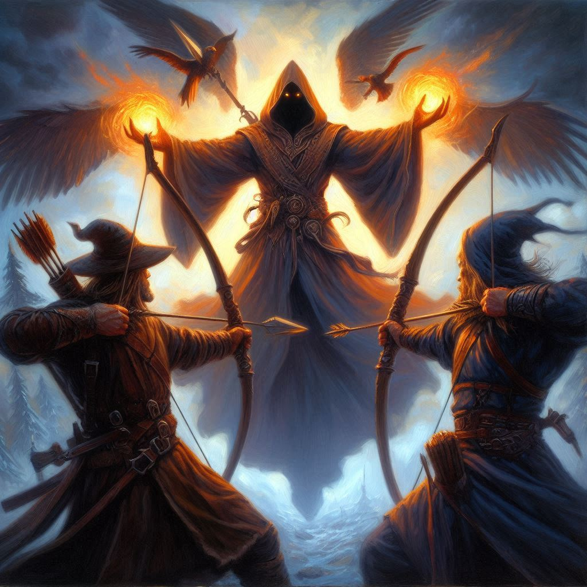
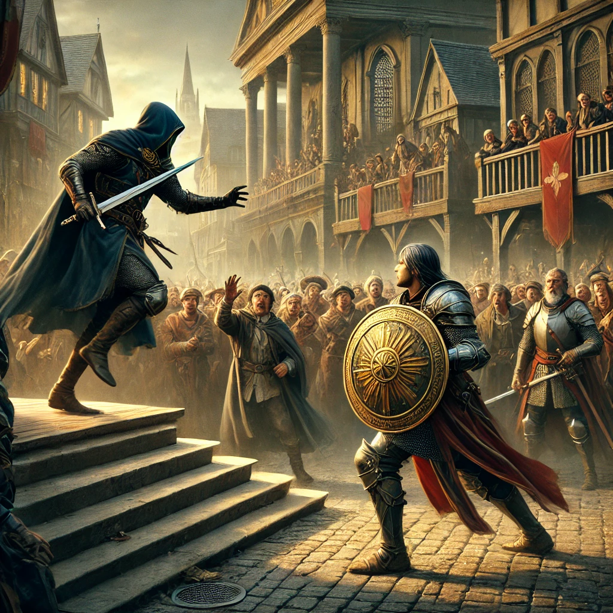
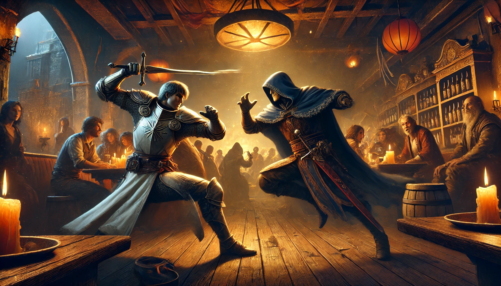
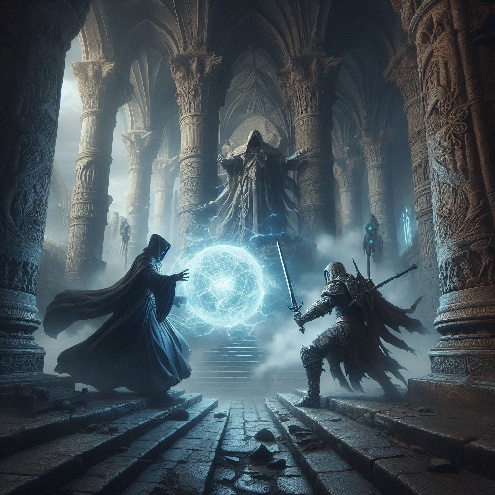

In traditional tabletop RPGs like Pathfinder and D&D, combat is largely sequential rather than reactive. It's difficult to react to actions, and all creatures/players roll for initiative at the start of combat, creating a complex management task for the GM that adds little depth to gameplay.
This leads to two main issues:
While reaction mechanics exist in D&D and Pathfinder, they are often underutilized or overcomplicated. For instance, Pathfinder's ready actions require players to declare conditions in advance, while D&D 5e's reaction system can lead to overly scripted encounters.
In short, these existing combat systems demand significant management but offer little in return beyond a highly sequential combat experience. This limits character possibilities and hinders combat scenes from effectively telling our story.
To address these issues, I've developed a solution with my group of players: the reactive combat system.
It's important to recognize that most gameplay occurs in Roleplay Mode, where players perform actions and engage in dialogue at various paces, from seconds to years in game time.
However, we need a turn-based mode for situations where characters compete with other creatures, such as during combat. We'll call this Combat Mode. Here, each turn represents a specific amount of time, typically 6 to 10 seconds.
The reactive combat system is built on three key concepts:
In the next section, we'll cover the Basic Action Pool and more specific rules for combat actions.
All human-like characters at level 1 start with the following basic action pool:
Actions in each category are classified into tiers based on the number of actions available per turn:
| Tier | Actions Required |
|---|---|
| TIER1 | 1-3 |
| TIER2 | 4-6 |
| TIER3 | 7-9 |
| TIER4 | 10+ |
| Highest Tier | Action Board |
|---|---|
| TIER1 | TIER1 |
| TIER2 | TIER2-TIER1 |
| TIER3 | TIER3-TIER2-TIER1 |
| TIER4 | TIER4-TIER3-TIER2-TIER1 |
Action economy per turn:
This is how a character with a tier2 action economy can play his actions during a turn:
| Tick | Action Board | Actions Taken | Remaining Actions |
|---|---|---|---|
| 1 | TIER2-TIER1 | ATTACK-GENERAL | A:3, S:2, G:2 |
| 2 | TIER2-TIER1 | ATTACK-GENERAL | A:2, S:2, G:1 |
| 3 | TIER2-TIER1 | ATTACK-ATTACK | A:0, S:2, G:1 |
Action economy per turn:
This is how a character with a tier3 action economy can play his actions during a turn:
| Tick | Action Board | Actions Taken | Remaining Actions |
|---|---|---|---|
| 1 | TIER3-TIER2-TIER1 | ATTACK-ATTACK-ATTACK | A:4, S:5, G:4 |
| 2 | TIER3-TIER2-TIER1 | ATTACK-ATTACK-ATTACK | A:1, S:5, G:4 |
| 3 | TIER3-TIER2-TIER1 | ATTACK-SPELL-GENERAL | A:0, S:4, G:3 |
This system allows for strategic decision-making each tick while scaling effectively for higher-level characters, creating dynamic and unpredictable combat scenarios.
Attacks form a core part of combat actions. The number of attacks a character can perform increases with their level and Base Attack Bonus (BAB). Remember that when a character has more than 3 attacks per turn, they can perform more than one attack in a single time unit.
Spellcasting is a flexible action in the Reactive Combat System. The number of spells a character can cast per turn increases as they level up, with all characters gaining an additional spell per turn at level 10.
Spell casting time can vary between 1, 2, or 3+ time units, generally correlating with the spell's power or complexity. This variability allows for strategic decision-making in combat, as players must balance the power of their spells with the time it takes to cast them.
Spell casting time is spell-specific but can be modified with metamagic. For instance, Quickening a spell reduces casting time but increases the spell slot (mana) cost. For multi-turn spells:
First tick: The character channels the spell (can move a bit, potentially to cover) Second tick: The spell is released
Reflex saves are used to handle priority conflicts when the spell is released.
All movement occurs simultaneously with other actions, at the character's speed. If a character has a speed of 20ft, they can move 20ft while attacking. Their movement can be distributed as they choose during their actions.
This system allows for dynamic, fluid combat scenarios where characters can reposition themselves while performing other actions, adding an extra layer of tactical depth to encounters.
Difficult terrain rules still apply, affecting movement speed. Opportunity attacks have been removed from this system to streamline combat flow.
The system is most reactive for characters with high Reflex saves. Having the highest Reflex save is analogous to being in the dealer position in Texas Hold'em poker, allowing you to react to others' actions. Example scenario: Two mages are fighting. Mage A has a Reflex save of 1d20+15, Mage B has 1d20+16.
Mage A announces casting Fireball on Mage B. Mage B declares casting Stone Wall for protection. Both roll Reflex saves: Mage A gets 20, Mage B gets 19. The GM rules that the Stone Wall comes up too late, and the Fireball deals damage to Mage B.
Area of effect spells function similarly to traditional systems. In situations where multiple characters are affected: Example: An NPC is casting Hold Monster Mass
Three players attempt to react. If one succeeds in their reaction (determined by Reflex saves), they might interrupt and cancel the spell.

Start of Combat:
Time Unit 1:
The GM asks for a Reflex showdown between the archers and the sorcerer to determine which action has priority.
Reflex Rolls for Action Priority:
Outcome: Sorcerer wins the Reflex roll, allowing him to perform his chosen action with priority.
Time Unit 1 Resolution:
Time Unit 2:
Sorcerer: Now safe behind his wall, decides to prepare a counterattack spell, Fireball for the this tick. He starts the incantation.
Archer 1 & 2: Realize their arrows were ineffective. They must decide whether to move to get a line of sight around the wall or wait for another opportunity. Both archers decide to move around the wall to get a shot.
Time Unit 3:
The archers now see the sorcerer, but they are surprised to see that he's almost done channeling a Fireball spell. They know the dangers of this spell. They quickly announce that they fire four arrows at the sorcerer.
The sorcerer announces that he will continue channeling Fireball and when it's ready, attack the archers with it.
The GM asks for a Reflex showdown. The sorcerer obtains the highest reflex score. He chooses to unleash his fireball at the last second, after the arrows have been loosed, and the powerful ball of flames reduces the arrows to dust and injures the archers, who quickly flee.
Note: The sorcerer could have chosen to hit the archers with the Fireball before they loosed their arrows. This kind of detail is up to the GM to arbiter.

GM: "Lord Valorian is midway through his speech about the new trade agreement. Thorne, you're scanning the crowd. Give me a Perception check."
Thorne's player rolls Perception: 1d20+5 = 25
GM rolls Stealth for the assassin: 1d20+16 = 24
GM: "As you scan the crowd, something catches your eye. You can't quite place it, but your instincts tell you something's amiss in the southeast corner of the square."
Thorne's player: "I want to focus my attention on that area and ready my shield, preparing to protect Lord Valorian if needed."
GM: "Alright. As you focus, you suddenly spot a hooded figure reaching into their cloak. A glint of metal catches your eye – they're drawing a throwing knife! He throws the knife at Lord Valorian!
Thorne's player: "I'll leap in front of Lord Valorian, raising my shield to intercept the knife!"
GM rolls for the assassin: 1d20+14 = 27
Thorne's player rolls: 1d20+9 = 19, with 50% shield bonus becomes 28
GM: "The assassin's arm blurs as they launch the knife with incredible speed. But Thorne, your heightened awareness and your shield at the ready allow you to react just as quickly. With a resounding clang, the knife strikes your shield dead center, the impact reverberating through your arm. Lord Valorian flinches at the sudden movement and noise but remains unharmed. The crowd erupts into chaos, screams filling the air. Despite the chaos, your eyes lock onto the assassin. He is trying to slip away through the panicking crowd, about 50 feet from you now."
Thorne's player: "I'll shout to my companions to protect Lord Valorian, then I'm going to pursue the assassin!"
GM: "Alright! As your companions rush to secure Lord Valorian, you leap off the stage, shield still in hand, in hot pursuit of the assassin.

GM: "The tavern is bustling with the usual evening crowd when suddenly, Reynard, you spot your sworn enemy, the evil sorcerer Malthus, sitting at a corner table. Malthus, you also notice Reynard at the same moment. What do you both do?"
Reynard's player: "I'm going to leap towards Malthus, sword drawn, ready to strike him down with everything I've got."
Malthus's player: "Knowing I can't win in a direct fight, I'm going to flee. I draw my Rod of Quicken and cast Quickened Dimension Door to escape."
GM: "Alright, Reynard's charge and two sword attacks will take 1 tick. Malthus, your Quickened Dimension Door also takes 1 tick. Let's roll for Reflex to see who acts first."
Reynard rolls: 1d20+13 = 25
Malthus rolls: 1d20+11 = 23
GM: "Reynard, your paladin charges the sorcerer with incredible speed. You notice a rod glowing in Malthus's hand, likely for spellcasting. You strike fast and true, and the deep wound you inflict on the sorcerer's torso disrupts his spellcasting. Malthus, your spell fails as pain sears through your body. Reynard, you ready your second sword hit, but this time, Malthus's luck allows him to avoid a fatal injury, though he's still badly wounded."
Malthus's player: "I grimace in pain, clutching my wound. That was too close!"
Reynard's player: "I press my advantage, ready to end this once and for all."
GM: "Alright, what are your actions for this tick?"
Reynard's player: "I'm attacking Malthus again, determined to finish him off this time."
Malthus's player: "I'm going to try Quickened Dimension Door again. This time, I'm confident I can pull it off. My character Malthus says, 'You are strong, just like your father was. But you have a long way to go. The next time we meet, it won't be so easy.' Then I activate my Rod of Quicken and cast Quickened Dimension Door."
GM: "Excellent roleplaying! Let's roll for Reflex again."
Malthus rolls: 1d20+11 = 30 (a critical roll!)
Reynard rolls: 1d20+13 = 28
GM: "Reynard, you swing your sword with all your might, but you feel nothing but the ale-scented air of the tavern. Your foe has escaped. Malthus, in a flash of arcane energy, you disappear just as Reynard's blade whistles through the space where you stood a split second ago. You reappear several blocks away, wounded but alive."
Reynard's player: "I let out a roar of frustration, my sword embedding itself in the tavern's wooden floor where Malthus stood."
Malthus's player: "I collapse against a wall in the alley where I've teleported, breathing heavily. That was far too close, but I've survived to fight another day."

A high-level combat simulation between a powerful sorcerer and a mighty warrior of the Arch.
Daviau Morin: Level 22 Sorcerer of Cerberus, member of the Cerberus Mage Council. Actions per turn:
Plutarch: Level 25 Paladin of Archon.
Daviau: "I appreciate you accepting my invitation for this duel, Plutarch. Involving our troops in this conflict would be pointless."
Plutarch: "You're either brave or foolish to challenge me like this. It's time to remind you of the power of an Archon Paladin."
Daviau begins incanting "Summon Ice Elemental" of an unknown level. The aura pulsing around the sorcerer indicates a spell requiring a colossal amount of mana. Plutarch watches the scene, arms crossed, his curiosity piqued by the spell in preparation. Beautiful shades of red and blue intertwine, sketching the outlines of the creature being summoned by the sorcerer.
"You think this creature can defeat me? Ridiculous," Plutarch says, preparing to pounce. Flying and running at an extraordinary speed, the Paladin is instantly beside the sorcerer, ready to finish him with a powerful sword strike. The first sword blow hits Daviau Morin's barrier with incredible force, cracking the powerful abjuration shield.
Daviau Morin doesn't wait to see if his barrier can withstand more blows. The mage then incants "Dimension Door" to teleport out of danger, his Rod of Quicken glowing at his belt.
(Daviau can cast a spell here because this sorcerer can cast more than 3 spells per turn, allowing him to have at least one tick where he can use two spells. That's what he does here. He uses Dimension Door while still incanting Summon Ice Elemental.
Now, Plutarch and Daviau must oppose their reflexes with a Reflex Save each to determine if the Paladin's attack occurs before the teleportation. Daviau wins the Reflex Save and teleports before the second blow reaches him, saving what remains of his barrier.)
"You're already fleeing. Indeed, a son of a traitor is a traitor as well," Plutarch taunts.
Plutarch takes flight, seeking to see if Daviau Morin is hiding in the ruins of the temple, their chosen battlefield. His Paladin eyes, blessed by Archon himself and not by his censors, now scrutinize every stone of the temple ruins.
Further away, well hidden behind a wall, is Daviau Morin. He continues to silently incant his powerful spell, but he knows he must continue to buy time. He detaches a potion from his belt and swallows its contents. His body becomes invisible.
(Explanation: Daviau Morin, at his advanced level, can perform more than three general actions per turn, allowing him to perform both a general action (drinking a potion) and a spell (Summon Ice Elemental) in the same tick.)
"Since this battle has become a game of hide and seek, I know how I'll play," says Plutarch as he begins to incant the spell "Light of Destruction," an area destruction spell.
Plutarch has finished incanting his "Light of Destruction" spell. The sky opens, and a huge ray of sunlight begins to sweep the area about to be destroyed.
(Daviau has also almost finished incanting his spell. Will he have his ice elemental before the "Light of Destruction" spell triggers? Once again, the reflexes of the magician and the divine warrior must be opposed. Daviau wins this Reflex contest once more.)
Daviau completes his spell just in time. The colossal ice elemental appears before him, protecting its master from the destructive light with its massive body. Daviau suffers only minor damage, which his barrier completely blocks. Daviau exhales deeply. The most delicate part of this combat has passed. He deactivates the invisibility spell from his potion.
Seeing the sorcerer and his colossal elemental still standing even after this powerful attack, Plutarch smiles. "Now, let the real battle begin!" he says joyfully.
Total actions used in the turn:
This combat example illustrates how having a surplus of actions is highly advantageous in battles.